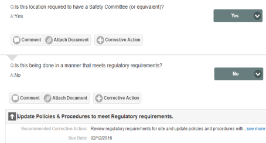
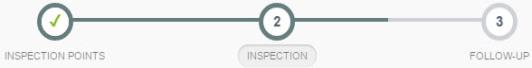

All inspections that have been scheduled or are in progress (as well as completed inspections) can be found on the Calendar or the Search page for the associated facility.
To find an inspection that has already been scheduled or is in progress:
Select the facility from the sidebar.
If the sidebar is not displayed, select the sidebar button to display it.
The inspection summary is displayed in a pop-up dialog. If the Status=Not Started, you will need to initiate the inspection first. Click Go to this Inspection to go to the New Inspection page to select the objects for the inspection.
If the Status= In Progress, click Go to this Inspection to go directly to the inspection form.
To complete the inspection form:
Answer each question on the inspection form.
Note that all questions must be answered.
Select an answer, or click Reply to enter a text response.
Some answers may automatically create sub-questions, which also need to be answered.
Some answers may automatically trigger a finding. The finding will be shown immediately below the question. Click the arrow to expand it and see details. The finding will be created when the inspection is marked complete. Default corrective actions will also be created at that time.
Some answers may automatically trigger a corrective action. The corrective action is shown immediately below the question. Click the arrow to expand it and see details. The corrective action will be created when the inspection is marked complete.
In the example shown below, a sub-question was triggered by the answer to the question. A corrective action has been triggered by the answer to the sub-question.

You may also create corrective actions manually for any question. See Create Findings and Corrective Actions.
If you are working offline, be sure to save your progress as you go so changes can be synced later. See Working Offline with Inspections for more information.
When all questions have been answered, mark the inspection complete by clicking Mark Complete at the top of the page.
Marking the inspection complete will complete the inspection task shown on the calendar. The inspection will stay open for the completion of any corrective actions.
Once you mark the inspection complete you will not be able to enter additional corrective actions, so make sure you have created all the corrective actions you need before marking the inspection complete.
If you are working offline, you will not be able to upload documents or pictures offline, so do not mark the inspection complete until you have re-connected and had an opportunity to upload your files.
After the inspection is marked complete, you will be taken to the Follow-up page. Corrective actions that were created during the course of the inspection will be displayed. See Inspection Follow up and Close.
From a correction action, you can do any of the following:
There will be one section for each Inspection Point with the questions appropriate to that item. There may also be a General section for questions that do not apply to a specific item.
Save and keep track of your progress:
The progress bar at the top of the page shows that you are at Step 2 in the inspection process.

Adding Inspection Points to the inspection in progress:
If you need to add additional Inspection Points to the inspection (or create a new Inspection Point), on the progress bar, click Step 1, Inspection Points, and add one or more items. To create a new object for inspection, see Create New Inspection Points.
You will be returned to the New Inspection page. Add the Inspection Points you want to the selected objects. Click Save Progress. A new section will be created on the form for each additional Inspection Point and you will be returned to the inspection form.
To change the Inspection Date, on the progress bar, click Step 1. Edit the Inspection Date and click Save. To return to the inspection form, click Step 2 on the progress bar.